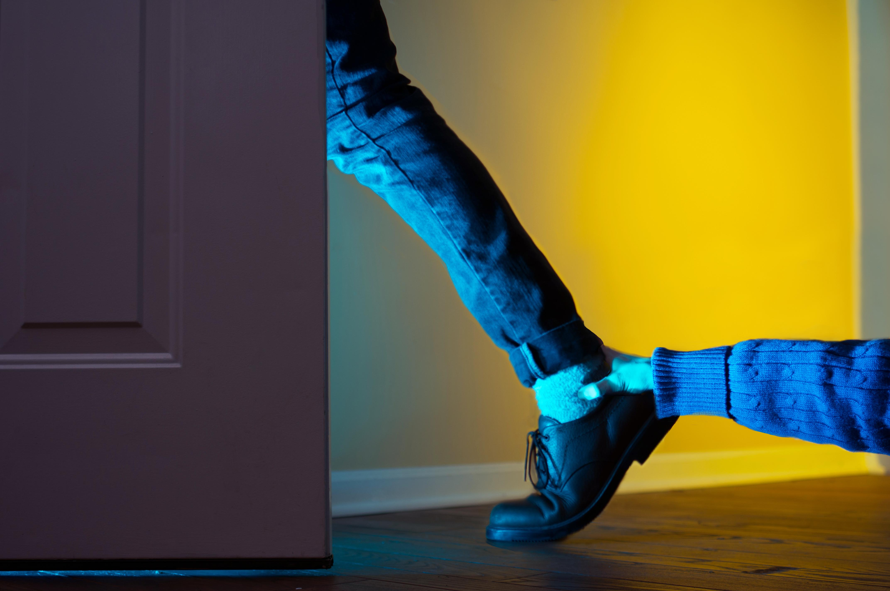
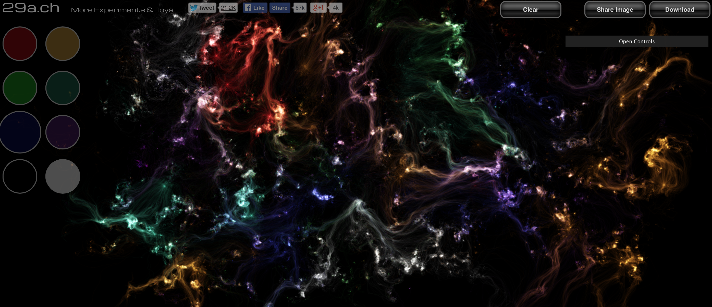

Emma Mattson, 21, is a photographer from the Baltimore area, specializing in portraiture and conceptual work. She hopes to work for Vogue one day, although this is a hard dream to accomplish, she's gotten some photos in the "Best Of" section of the PhotoVogue website.
I like the rollover buttons in the home page of the Vogue website. When you roll over them, little images come up underneath that relate to the button. For example, one day when I rolled over PhotoVogue, my picture popped up under it as one of the editor's favorites, which made me happy. I just like how when you click or rollover anything you get to see a preview of pictures that you will soon see. I also like how PhotoVogue is just a big portfolio sectioned off into different categories of photography.

This website allows you to paint your own nebulas by choosing a color from the side panel and clicking on the black screen. It's very interactive and you can share or download your painting when you're done. It's just an interesting and calming place.
